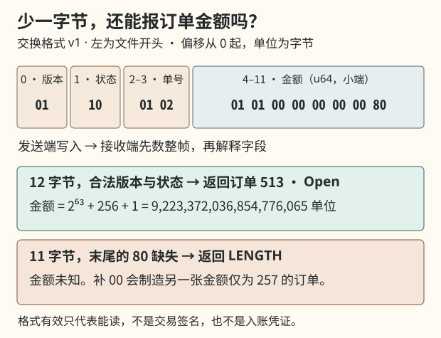

本页目录
不能，先请对方重交完整原件。这里报价占八格，约定把分量最小的一格放在最前。现存的报价开头两格都是 1，分别值 1 和 256；其余收到的格是零。257 只是擅自假定最后一格也为零的结果，不是收到的报价。
只补回原件确有的末字节 80（十六进制）。 现在够 12 格，版本和状态也符合约定，还报 257 吗？最后这格是十进制 128，权重为 256 的七次方，它补回的是 2⁶³。完整报价为 9,223,372,036,854,776,065 个最小单位。能读出报价，不说明有人已付款或在链上提交过这张单。
只阅读可去第 30 课看一张真正的付款凭据要查什么。以下选做：让 Rust 对完整件报数，对同一份订单的残件只报错、不输出金额。
先修：M01 · 签名绑定哪些字节；做过 M04 · ABI 与整数边界会更容易比较两种格式，但不是开工条件。本课只处理合成订单的本地文件，不需要钱包、密钥或 validator。这里的「单位」是两端为一种教学商品约定的计数单位，不是 SOL、lamport 或某种代币。
两个进程之间，传的不是一个 Rust 对象
用 Java 写服务时，方法的两个形参可以指向同一个订单实例。换到文件或网络边界，接收方没有那块内存，也不知道哪个字段在前；直接转储 Rust 结构体的内存还可能带上编译器选择的布局、填充和机器字节序。序列化是按约定把值写成一串字节；反序列化是先确认字节符合约定，再恢复有类型的值。这里约定一份文件恰好是一张记录，不是多条记录的拼接。
| 字节偏移（首尾均含） | 字段与类型 | v1 写入规则 | 513 号单，十六进制字节 |
|---|---|---|---|
| 0 | 版本，u8 |
只接收 0x01 |
01 |
| 1 | 状态，1 字节标签 | 0x10 表示 Open（仍可受理），0x20 表示 Cancelled（已撤销） |
10 |
| 2–3 | 单号，u16 |
无符号、小端 | 01 02 |
| 4–11 | 报价，u64 |
无符号、小端，单位固定 | 01 01 00 00 00 00 00 80 |
小端指权重最低的字节先放，不是把一个字节里的比特左右倒过来。01 02 表示 1 + 2 × 256 = 513。报价的第 0、1、7 个字节非零，合计 1 + 1 × 256 + 128 × 256⁷ = 2⁶³ + 257。少掉最后的 80，就把权重最大的那个字节弄丢了；它原来是 00、80 还是别的值，无法从前 11 字节推出。已撤销的单仍可保留原报价；状态不是付款事实，也不把金额清零。


先写一张固定的表，再跑一次往返
工作目录为仓库根目录，以下命令在同一个 Bash 中执行。工具基线是宿主机 rustc 1.98.1、Rust edition 2021 和系统链接器；无 Cargo 包、无需下载依赖。尚无编译器时先按 Rust 官方安装说明准备工具链及对应平台的链接器；若用 rustup 切到指定版本，可运行 rustup toolchain install 1.98.1 --profile minimal 再 export RUSTUP_TOOLCHAIN=1.98.1。首次安装工具需要联网，之后下列编译和运行均可离线。
SRC=labs/m08/order
WORK=$(mktemp -d)
B="$WORK/order"
rustc --version > "$WORK/rustc.txt" && cat "$WORK/rustc.txt"
rustc --edition=2021 -O "$SRC/main.rs" -o "$B"
"$B" encode 513 open 9223372036854776065 > "$WORK/order.bin"
wc -c < "$WORK/order.bin"
od -An -v -tx1 "$WORK/order.bin" | tee "$WORK/order.hex"
"$B" decode < "$WORK/order.bin" > "$WORK/order.txt" && cat "$WORK/order.txt"
encode 的标准输出是原始二进制，并没有把十六进制字母或十进制数字写进文件；od 才是它的十六进制查看器。预期编译和两次调用均退出 0，忽略排版空格应见：
12
01 10 01 02 01 01 00 00 00 00 00 80
id=513 status=Open units=9223372036854776065
wc 报 12 只能说格数够。接着看 od 的输出，跳过版本 01 与状态 10，第 3、4 个字节必须是 01 02，按约定算出 1 + 2 × 256 = 513。报价段的末字节还必须是 80，所以要读出开头算过的那个大整数，而非 257。最后把这两个人工算的数与解码行的 id、units 比。为什么不只看「写出后能读回」？如果两端把顺序一起写反，仍可能读回 513，接手人按交接表却会读出另一张单。
哪个值交出去了，哪个只是借给函数看一下？
打开 order.rs。struct Order 要求每张单同时有 id、status、units；enum Status 表示状态只能取列出的一个分支，业务对象不会暂时拿一个任意整数充当合法状态。标签只在读写边界映射。encode(&self) 接受订单的共享借用，读这些字段，返回新的 [u8; 12] 定长数组；to_le_bytes() 固定字节序，两次 copy_from_slice 各把正好 2、8 个字节写入自己的区域，不按原生内存布局输出。
下面三行可放在构造好 order 的 Rust 代码处理解所有权；不是三次订单提交：
let preview = order.encode(); // 相当于 Order::encode(&order)，订单还在
let next = order; // 把 Order 移到新绑定，不是复制一份订单
assert_eq!(preview, next.encode());
Java 的 Order next = order 复制引用，两者通常仍能访问同一个对象。这里的 Order 没有实现 Copy；移动后只有 next 还能用于整单操作，再写 order.encode() 会在编译时遇到 use of moved value，不是运行时空指针。u16、u64 自身可以按值复制，这不让整个 Order 自动实现 Copy。如果只是要先审单再交接，用 &Order；接手函数确实要持有整单才用 Order 按值传入。需要就地修改才借 &mut Order，在该独占借用仍要使用期间，不能再从原绑定同时读写。不要靠克隆整单绕过这个选择。
反向接口 Order::decode(raw: &[u8]) 借用的是只读切片：指向一段字节并带长度，长度还没有被证明是 12。成功返回的 Order 只含自己的整数和枚举，不借用 raw；所以 main.rs 的 read_order 可以退出，让局部缓冲区销毁，而调用者仍能打印订单。这与 Rust 的内存所有权有关，不是下一课 Solana 账户的 owner 权限。
读不了，返回哪个错误？
编解码器先检查长度，再检查版本和标签，最后才创建业务对象。对照 decode 中这几步：
let frame: &[u8; WIRE_LEN] = raw.try_into().map_err(|_| DecodeError::Length(raw.len()))?;
let &[version, tag, lo, hi, units @ ..] = frame;
if version != VERSION {
return Err(DecodeError::Version(version));
}
let status = Status::from_tag(tag)?;
try_into()从切片取得同一块内存的定长数组引用，长度不是 12 就失败。map_err把转换错误翻成带观察长度的Length。这里的?相当于匹配Result：Ok取出值继续，Err从当前函数提前返回错误（需要时转换错误类型）。它不像 Java 的throw那样抛异常展开调用栈。- 数组模式把前四个字节分开，
units @ ..把剩下恰好八个字节绑定给units，供u64::from_le_bytes(units)使用。长度检查已经完成，不会因为输入太短就索引越界。只要版本不受支持，即使它看起来也有 12 字节，仍然拒绝按 v1 解释。 from_tag匹配0x10、0x20，其他字节返回Err(DecodeError::Status(tag))。这行的?把未知状态原样交给调用者，不会默认为 Open。Result<Order, DecodeError>表达的是「一张完整订单，或者一个错误」，不会同时返回半张订单。外层 CLI 才决定往标准错误写REJECT ...并退出 2；库里不打印、不退出、不用unwrap()处理外部输入。
现在只动长度。dd 取原件的前 11 字节，连版本和状态都不改。以下命令同时保留输出、诊断与退出码；不要用 程序 | tee ...; echo $? 推断被管道前一端的退出状态。
dd if="$WORK/order.bin" of="$WORK/short.bin" bs=1 count=11 2>/dev/null
rc=0; "$B" decode < "$WORK/short.bin" > "$WORK/short.out" 2> "$WORK/short.err" || rc=$?
printf '%s\n' "$rc" > "$WORK/short.rc"
test "$rc" -eq 2 && test ! -s "$WORK/short.out" &&
grep -Fx 'REJECT LENGTH expected=12 bytes_seen=11' "$WORK/short.err"
再做一个长度正确的对照。仅覆盖偏移 1，Bash 的 \177 是八进制写法，即十六进制 7f；conv=notrunc 保留后面的金额。预期错误不同，不能只断言「都不是 0」。
cp "$WORK/order.bin" "$WORK/unknown.bin"
printf '\177' | dd of="$WORK/unknown.bin" bs=1 seek=1 conv=notrunc 2>/dev/null
rc=0; "$B" decode < "$WORK/unknown.bin" > "$WORK/unknown.out" 2> "$WORK/unknown.err" || rc=$?
printf '%s\n' "$rc" > "$WORK/unknown.rc"
test "$rc" -eq 2 && test ! -s "$WORK/unknown.out" &&
grep -Fx 'REJECT STATUS tag=0x7f' "$WORK/unknown.err"
read_order 会循环读，因为成功的一次 read 也可能只读到部分字节；读到 EOF 才知道给的是整份短文件。最多容纳 13 字节：多出一个就足够判错，不需把大文件全缓存在内存。对更长的文件，CLI 报 bytes_seen=13，表示「至少看到 13」，不是声称测出了整个文件大小。这个 CLI 接受会结束的单记录输入，不是面向长连接的消息分帧器。
到 Solana 时，能直接贴这 12 字节吗？
不能靠语言相同来决定。我们写的是本课自定义的字节格式：版本和标签都是双方自己规定的。Borsh 也是确定性的二进制序列化规范：整数按小端写、结构体按声明的字段次序写、通常的枚举按 u8 变体序号再跟变体内容写。直接给这里的 Order { id, status, units } 按 Borsh 的普通规则派生序列化，第一项会是 id，没有本课另加的版本字节，普通的第一个状态也不会自然变成 0x10。即使两个例子都用了 u64 小端，也不能互换。
Anchor 则是构建 Solana 程序的框架，不是一种整数编码。常规 Anchor 指令有区分指令的 discriminator（默认 8 字节）及序列化参数；常规 Anchor 数据账户另有标识账户类型的 discriminator 和字段布局。针对某个部署，读它的程序、IDL 与版本，而不是把本课偏移 0 的 01 当作指令号或账户 discriminator。即便本课文件完全合法，它也没有指定链、程序、账户、签名者，更没有交易回执；不能据此声称付款或撤销已在链上执行。
独立作业：在 Java 的有符号上界之外交接一张撤销单
交给同事新的 1025 号撤销单，报价取 u64 最大值。先在纸上按字段写出 12 字节；再让编码端写文件，解码端和另一位只认字段表的同事各读一次。最后分别回答：「在文件后面多一个 00 是允许的填充吗？」「在报价文本上加一单位会写出零吗？」每次只改变一个条件。
"$B" encode 1025 cancelled 18446744073709551615 > "$WORK/max.bin"
od -An -v -tx1 "$WORK/max.bin" > "$WORK/max.hex"
"$B" decode < "$WORK/max.bin" > "$WORK/max.txt"
(cat "$WORK/max.bin"; printf '\000') > "$WORK/trailing.bin"
rc=0; "$B" decode < "$WORK/trailing.bin" > "$WORK/trailing.out" 2> "$WORK/trailing.err" || rc=$?
printf '%s\n' "$rc" > "$WORK/trailing.rc"
rc=0; "$B" encode 1025 cancelled 18446744073709551616 > "$WORK/overflow.bin" 2> "$WORK/overflow.err" || rc=$?
printf '%s\n' "$rc" > "$WORK/overflow.rc"
如果接手方有 JDK 21，可独立从同一份 max.bin 读出原始位，再用 Java 的无符号十进制显示值；这段只复核该已知布局的样本，不是完整 v1 解码器。ByteBuffer 默认大端，所以要显式选择小端。
ORDER_FILE="$WORK/max.bin" jshell - <<'JAVA'
import java.nio.*;
import java.nio.file.*;
var b = ByteBuffer.wrap(Files.readAllBytes(Path.of(System.getenv("ORDER_FILE")))).order(ByteOrder.LITTLE_ENDIAN);
int version = Byte.toUnsignedInt(b.get()), tag = Byte.toUnsignedInt(b.get());
int id = Short.toUnsignedInt(b.getShort());
long bits = b.getLong();
System.out.printf("version=%d tag=%02x id=%d signed=%d unsigned=%s%n", version, tag, id, bits, Long.toUnsignedString(bits));
/exit
JAVA
提交与判据： 交 rustc.txt、原件和作业的 .bin、十六进制展开、解码输出，以及拒单诊断和退出码。单号 1025 = 4 × 256 + 1，所以作业原件必须是 01 20 01 04 ff ff ff ff ff ff ff ff。Rust 解出 id=1025 status=Cancelled units=18446744073709551615；Java 若显示 signed=-1，同一串位的 unsigned 应是 18446744073709551615，不是负报价。第一个变化报 REJECT LENGTH expected=12 bytes_seen=13，不输出订单；第二个报 REJECT UNITS expected=u64，输出文件为零字节，不是编码出金额为零的订单。两次拒单均应退出 2，无 panic。如果把边界换成合法的 0，状态、单号和长度都不变，但最后八字节应全为 00；报价为零是否允许下单，是业务层另一个判断。
查证原文
- Rust Book：所有权与移动、引用与借用、Result 与
?。把值交出去、暂借和错误传播是三种不同操作。 - Rust
u64标准库文档给出范围与from_le_bytes、to_le_bytes；Java 21Long区分有符号显示和无符号字符串转换。 - Borsh Specification 和 Anchor：Program IDL File分别说明值如何序列化、特定程序如何描述指令和账户。它们不是本课自定义 v1 的规范。